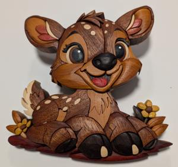

Tap image to view full size
Pattern Designer: Loading...
Primary Wood Types Used: Sepele, Pink Ivory, Hard Maple, Yellowheart, Wenge, Walnut, Paroba Rosa, Babinga, Cherry
Number of Pieces: About 110
Description: This is a pattern from Ross Erwin and is sure to bring a joy to people who see it